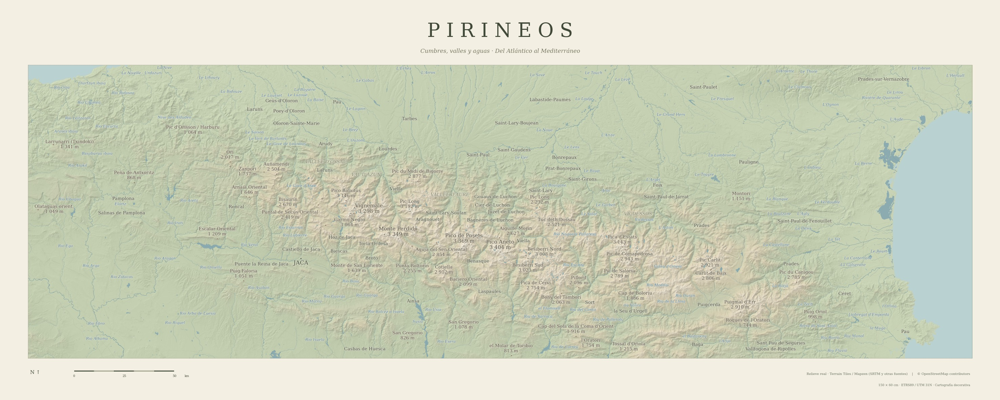

PIRINEOS
Una lámina de 150 × 60 cm con relieve real, cumbres, valles y aguas de la cordillera. Tonos de atlas clásico, ríos azules y Jaca como punto de referencia.

Imprimir al 100 %, sin recortar, sobre papel mate. El margen crema forma parte del diseño.
Relieve: Terrain Tiles / Mapzen (SRTM y otras fuentes). Hidrografía, poblaciones y cumbres: © OpenStreetMap contributors. Cartografía decorativa basada en datos geográficos; sin generación de imágenes con IA.